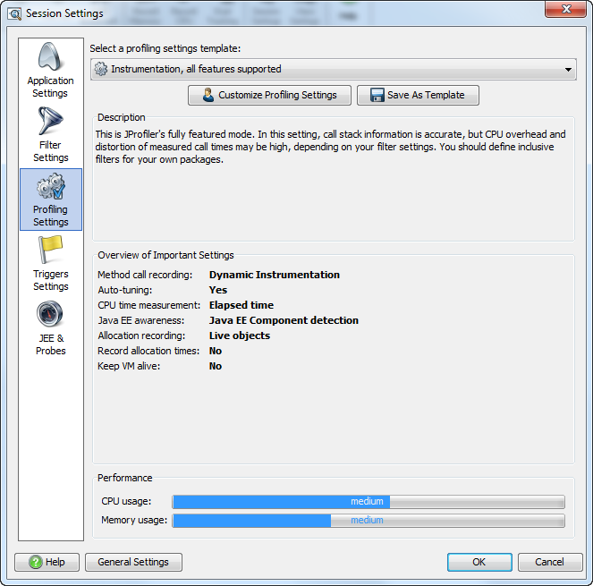

Configuring Session Settings |
Session settings can be shown by editing a session in the start center or by invoking Session->Session settings from the main menu for the currently running session. Every time a session is started, a startup dialog is displayed that allows you to change the session settings.
On older JVMs (1.5 and earlier), these settings must be adjusted according to your personal needs before the session is started. For modern JVMs (1.6 and later), JProfiler is able to change session settings at runtime. Any change in the session settings clears all recorded data. View settings can be changed during a running session without loss of recorded data. The primary distinction between session settings and view settings is that session settings determine how much data is recorded.

Why doesn't JProfiler just record everything it can and show it to the user? The answer is twofold:
HashMap#get(), the sufficiently
detailed information will be the duration of this call. When you're not familiar with an
implementation or if you're not in control of it, the internal calls structure is not
helpful information, but rather just clutter, that you can ignore.
In principle, reducing the information depth can be done after recording. The view filters in the CPU views are such an example: the internal call structure of all classes that do no match the selected view filter is removed from the call tree. However, especially the increased memory consumption of profiling is critical: if you do not have enough physical memory available, the profiled JVM might become unstable or even crash. So in practice, you should record as little data as possible. With appropriate profiling settings you choose the required detail while retaining an acceptable runtime performance.
Except for filter, trigger and probe settings, all other session settings are grouped into the "profiling settings" tab of the session settings dialog. Most of those settings are advanced settings, and do not need to be adjusted under normal circumstances.
JProfiler offers templates for profiling settings. When you start a new session, JProfiler asks you whether you want to start with the "Sampling" or "Instrumentation" template. On the startup dialog, overhead meters for CPU and memory overhead help you in judging whether the current profiling settings are acceptable for you. Please note that the overhead meters do not give any absolute values, because JProfiler has no way of knowing the runtime characteristics of your application. Rather, they are hints that allow you to compare different profiling settings.
Each profiling settings template defines certain values for the profiling settings that can be viewed and modified by clicking the [Customize profiling settings] button on the profiling settings tab of the session settings dialog. When you modify and save those settings, the template combo box displays that the profiling settings are "Customized".
The most important profiling settings are: